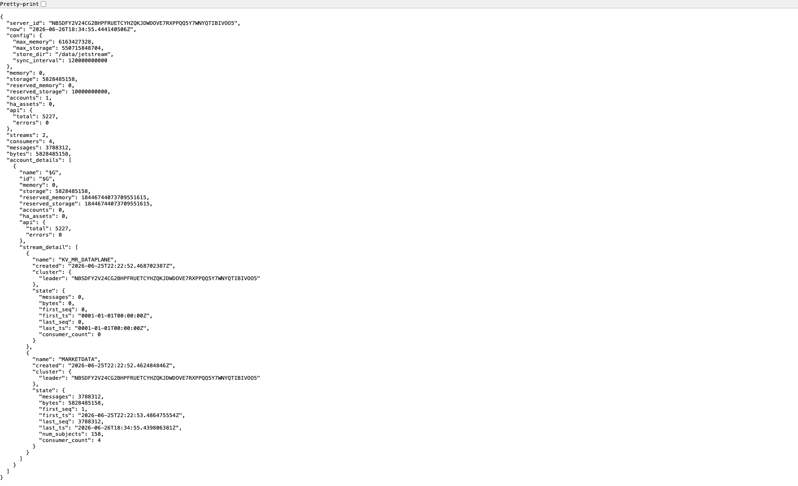
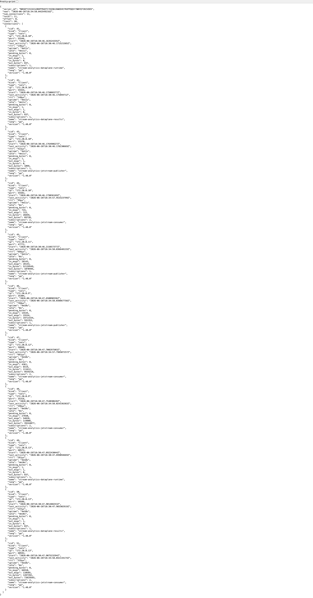
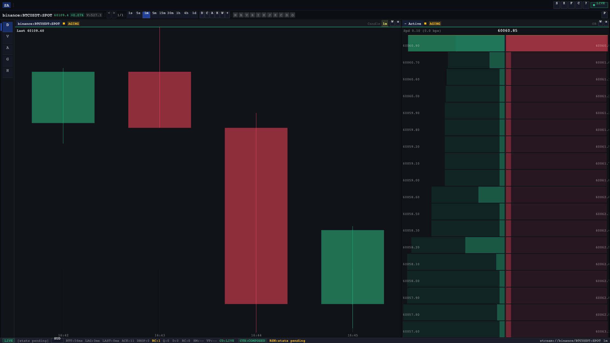

End-to-End Pipeline¶
The hot path is the primary real-time data flow. A raw market event emitted by an exchange WebSocket reaches the Odin cockpit in single-digit microseconds of processing latency, passing through five stages of transformation and delivery.
Full Sequence¶
Sequence Diagram — Live Data Ingestion¶
Status: Active
Last updated: 2026-06-25
Relates to: docs/architecture/subsystems.md, docs/contracts/event-bus.md
What this shows¶
The end-to-end happy path for live market data: from an exchange WebSocket message arriving at the Consumer, through NATS JetStream, through the Processor's aggregation pipeline, and finally to both storage and connected client sessions.
Full Pipeline Sequence¶
sequenceDiagram
autonumber
participant Exch as Exchange<br/>(WebSocket Feed)
participant WsMgr as ws.Manager<br/>(consumer)
participant MDSub as MarketData Subsystem<br/>(consumer actor)
participant JS as NATS JetStream<br/>(event bus)
participant AggSub as Aggregation Subsystem<br/>(processor actor)
participant InsSub as Insights Subsystem<br/>(processor actor)
participant DelSub as Delivery Subsystem<br/>(server actor)
participant StorSub as Storage Subsystem<br/>(store actor)
participant TsDB as TimescaleDB<br/>(L1 hot)
participant CH as ClickHouse<br/>(L2 cold)
participant Client as Client<br/>(Odin cockpit)
Note over Exch,WsMgr: Exchange pushes raw WebSocket message
Exch->>WsMgr: raw WS frame (trade / bookdelta / markprice / liquidation)
WsMgr->>MDSub: parsed raw payload (exchange-specific struct)
Note over MDSub: Canonicalize → CMM, dedup, monotonic seq
MDSub->>MDSub: canonicalize(raw) → CMM event
MDSub->>MDSub: dedup check (idempotency_key)
MDSub->>MDSub: assign monotonic seq + prev_seq
alt duplicate detected
MDSub-->>WsMgr: drop (increment dup_total counter)
else canonical envelope ready
MDSub->>JS: publish marketdata.{type}.v1<br/>(Envelope{seq, prev_seq, idempotency_key, payload})
JS-->>MDSub: PubAck (sequence confirmed)
end
Note over JS,AggSub: JetStream delivers to durable consumer group
JS->>AggSub: marketdata.{type}.v1 envelope
par Aggregation parallel paths
AggSub->>AggSub: build candle(s) [9 TF: 1s,5s,15s,1m,5m,15m,1h,4h,1d]
AggSub->>AggSub: apply bookdelta → orderbook snapshot
AggSub->>AggSub: update stats (OHLCV, cross-source metrics)
AggSub->>AggSub: append to tape (trade print)
end
AggSub->>JS: publish aggregation.candle.v1
AggSub->>JS: publish aggregation.snapshot.v1
AggSub->>JS: publish aggregation.stats.v1
AggSub->>JS: publish aggregation.tape.v1
JS-->>AggSub: PubAck × 4
JS->>InsSub: aggregation.{type}.v1
par Insights parallel paths
InsSub->>InsSub: accumulate heatmap bucket
InsSub->>InsSub: update VPVR slice
end
InsSub->>JS: publish insights.heatmap.v1
InsSub->>JS: publish insights.volume_profile.v1
JS-->>InsSub: PubAck × 2
Note over JS,DelSub: Delivery fan-out and storage write happen concurrently
par Delivery + Storage fan-out
JS->>DelSub: aggregation.*.v1 + insights.*.v1
DelSub->>DelSub: route by session subscriptions
DelSub->>Client: WebSocket push (Terminal_V1 envelope)
Client-->>DelSub: (implicit — no ACK required for live stream)
and
JS->>StorSub: aggregation.*.v1
StorSub->>StorSub: write L0 in-memory ring
StorSub->>TsDB: upsert candle / snapshot / stats (async batch)
TsDB-->>StorSub: OK
StorSub->>CH: insert heatmap / VPVR (async batch)
CH-->>StorSub: OK
end
AggSub-->>JS: ACK marketdata.{type}.v1
InsSub-->>JS: ACK aggregation.{type}.v1
StorSub-->>JS: ACK aggregation.{type}.v1
DelSub-->>JS: ACK aggregation.{type}.v1 + insights.{type}.v1Key Invariants Illustrated¶
| # | Invariant | Where enforced |
|---|---|---|
| 1 | Every envelope carries seq + prev_seq — receivers detect gaps |
internal/shared/envelope |
| 2 | idempotency_key prevents duplicate processing across restarts |
MDSub dedup check (step 5) |
| 3 | ACK is sent only after successful processing — NAK triggers redelivery | internal/adapters/jetstream/ingest_policy.go:59 |
| 4 | Delivery and Storage are independent JetStream consumers — one slow writer cannot block the other | Container isolation in docker-compose |
| 5 | L0 write is synchronous; L1/L2 writes are async batched — latency budget preserved | internal/adapters/storage/federation/merge.go |
Backpressure Paths¶
- Consumer:
ws.Managerdrops messages whenMaxEntries=20_000canonical state cap is reached (ws_backpressure_drops_totalcounter). - Delivery: Per-session bounded queue; slow clients receive NACK and the session triggers resync.
- Insights (VPVR):
vpvr_overload_policy.gosheds load when budget is exceeded without blocking the aggregation path.
Related Diagrams¶
- Client Session Protocol (
sequence-client-session.md) — how the client receives the events pushed in step 16 - Storage Federation Write Path (
sequence-storage-federation.md) — steps 18–21 in detail - Exchange Reconnect & Recovery (
sequence-exchange-recovery.md) — what happens when step 1 fails
Pipeline Stages¶
Exchange Adapters¶
Seven exchange adapters maintain persistent WebSocket connections, each implementing the
exchange.Adapter port:
| Exchange | Market Type | Adapter |
|---|---|---|
| Binance Spot | SPOT | adapters/exchange/binance/ |
| Binance Futures | USD_M_FUTURES | adapters/exchange/binancef/ |
| Bybit | USD_M_FUTURES | adapters/exchange/bybit/ |
| Coinbase | SPOT | adapters/exchange/coinbase/ |
| HyperLiquid | USD_M_FUTURES | adapters/exchange/hyperliquid/ |
| Kraken Spot | SPOT | adapters/exchange/kraken/ |
| Kraken Futures | USD_M_FUTURES | adapters/exchange/krakenf/ |
Each adapter normalises raw exchange messages into the Canonical Market Model (CMM) — a
uniform venue/symbol representation — before passing events downstream. Deduplication runs at
ingestion time using an idempotency_key derived from venue, symbol, and timestamp.
Consumer (cmd/consumer — :8081)¶
The consumer binary hosts the exchange actor fleet under the Hollywood Guardian runtime.
ExchangeActor instances manage connection lifecycle (exponential backoff on disconnect,
gap-fill on reconnect). DeduplicationActor filters repeated events before publish.
Canonicalised events are published to NATS JetStream under the marketdata.> subject hierarchy.
NATS JetStream (:4222 / :8222)¶
NATS JetStream is the durable message bus between Consumer and Processor. Every envelope carries two sequencing fields:
Envelope Sequencing
Each NATS envelope includes seq (monotonically increasing per stream) and prev_seq
(the sequence of the immediately preceding message). Receivers detect gaps by checking
prev_seq != last_seq + 1. A mismatch triggers a resync request to the server.
This invariant is never bypassed — publishing an envelope without correct prev_seq
threading breaks client gap detection.


Processor (cmd/processor — :8082)¶
The processor consumes marketdata.> from NATS and runs the aggregation engine:
- 9 OHLCV timeframes: 1s, 5s, 15s, 30s, 1m, 5m, 15m, 1h, 4h
- Stats aggregation: funding rate, liquidations, mark price, open interest
- Heatmap snapshots: price-level volume distributions
- VPVR: Volume Profile Volume Rate — per-level buy/sell volume
- LEL evidence detection: 5 stateful Liquidity Evidence Layer rules
Key actors: AggregationActor, InsightsActor, EvidenceActor.
Server (cmd/server — :8080)¶
The server binary provides the WebSocket delivery gateway and HTTP API. Clients connect via the Terminal_V1 protocol, which supports:
- Hello handshake — server announces available streams
- Subscribe — client selects streams; server ACKs
- Snapshot — initial state delivery
- Backfill —
getrange/getlast/resyncfor historical data - Live events — continuous envelope delivery with backpressure management
Rate limiting and per-stream coherence checking run at the delivery layer.
Store (cmd/store — :8083) + Storage Federation¶
The store binary persists aggregated events through a 3-tier storage federation:
Sequence Diagram — Storage Federation Write & Read Path¶
Status: Active
Last updated: 2026-06-25
Relates to: docs/architecture/storage.md, docs/architecture/diagrams/c4-containers.md
Code anchor: internal/adapters/storage/federation/merge.go, internal/adapters/storage/federation/candle_reader.go
What this shows¶
How the Storage subsystem receives aggregated envelopes from JetStream and fans them out across three tiers (L0 → L1 → L2), and how federated reads merge results across tiers when the server serves a historical range query or backfill.
Write Path — Tier Fan-out¶
sequenceDiagram
autonumber
participant JS as NATS JetStream
participant StorAct as Storage Actor<br/>(cmd/store)
participant L0 as L0 — In-Memory Ring<br/>(bounded, recent window)
participant L1 as L1 — TimescaleDB<br/>(hot, 7-day rolling)
participant L2 as L2 — ClickHouse<br/>(cold, long-term archive)
JS->>StorAct: aggregation.candle.v1 envelope
StorAct->>StorAct: parse + validate envelope
Note over StorAct,L0: L0 write is synchronous — always first
StorAct->>L0: write(stream, envelope)
L0-->>StorAct: OK (ring-buffer slot allocated)
Note over StorAct,L1: L1 and L2 writes are async batched — do not block
par Async writes (fire-and-flush cycle)
StorAct->>L1: batch.append(candle row)
Note over L1: Flush when batch_size=1000<br/>or flush_interval=500ms
L1->>L1: upsert INTO candles ON CONFLICT DO UPDATE
L1-->>StorAct: flush OK
and
StorAct->>L2: batch.append(candle row)
Note over L2: Flush when batch_size=5000<br/>or flush_interval=2s
L2->>L2: INSERT INTO candles (append-only, no conflict)
L2-->>StorAct: flush OK
end
StorAct-->>JS: ACK envelope
Note over StorAct,L2: Heatmap and VPVR go only to L2 (analytical, no hot path needed)
JS->>StorAct: insights.heatmap.v1 envelope
StorAct->>L2: batch.append(heatmap_bucket row)
L2-->>StorAct: (async, batched flush)
StorAct-->>JS: ACK envelopeRead Path — Federated Range Query¶
sequenceDiagram
autonumber
participant Caller as Caller<br/>(Backfill Service or HTTP handler)
participant Fed as Federation Layer<br/>(internal/adapters/storage/federation)
participant L0 as L0 — In-Memory Ring
participant L1 as L1 — TimescaleDB
participant L2 as L2 — ClickHouse
Caller->>Fed: rangeQuery(stream, from=T-24h, to=T)
Note over Fed: Federation determines tier coverage by time range
Fed->>Fed: classify range:
Note over Fed: T - retention_L0 → now = L0 coverage<br/>T - 7d → T - retention_L0 = L1 coverage<br/>T_archive → T - 7d = L2 coverage
par Parallel tier reads
Fed->>L0: read(stream, max(from, T-retention_L0), to)
L0-->>Fed: envelopes[] (sorted by seq, may be empty for old ranges)
and
Fed->>L1: SELECT candles WHERE time BETWEEN ... ORDER BY time
L1-->>Fed: rows[]
and
Fed->>L2: SELECT candles WHERE time BETWEEN ... ORDER BY time
L2-->>Fed: rows[]
end
Note over Fed: Merge: deduplicate by (stream, seq), sort by time, fill gaps
Fed->>Fed: merge(L0_results, L1_results, L2_results)
Fed->>Fed: dedup by idempotency_key
Fed->>Fed: sort ascending by open_time
Fed-->>Caller: merged envelopes[] (gapless, deduplicated)Retention & Coverage Rules¶
| Tier | Technology | Typical retention | Written by | Read by |
|---|---|---|---|---|
| L0 | In-memory ring buffer | ~5 min (bounded slots) | Storage actor (sync) | Federation, Backfill |
| L1 | TimescaleDB | 7 days rolling | Storage actor (async batch) | Federation, HTTP /api/v1/* |
| L2 | ClickHouse | Indefinite (archive) | Storage actor (async batch) | Federation, HTTP /api/v1/* |
Heatmap and VPVR data skip L0 and L1 — they land only in L2 due to their analytical nature and large row size.
Idempotency on Write¶
TimescaleDB upserts use ON CONFLICT (stream_id, open_time, timeframe) DO UPDATE to
handle redelivered envelopes after a consumer restart. ClickHouse uses append-only inserts;
deduplication on read is handled by the federation merge layer.
Code: internal/adapters/storage/timescale/candle_reader.go:1
Test: internal/adapters/storage/federation/consistency_test.go:1
Related Diagrams¶
- Live Data Ingestion (
sequence-live-ingestion.md) — the producer side that feeds StorAct (steps 18–21) - Client Session Protocol (
sequence-client-session.md) — how the Backfill Service uses rangeQuery (step 11)
| Tier | Backend | Role |
|---|---|---|
| L0 | In-memory ring buffer | Hot write buffer, sub-µs access |
| L1 | TimescaleDB 2.25.1 (PG16) | Hot storage, range queries |
| L2 | ClickHouse 24.8.8 | Cold storage, analytical scans |
Key actors: StoreActor, FederationActor. Writes fan out to L1 and L2 in parallel; L0 absorbs
burst traffic above L1 insertion throughput.
Odin Client (:8090)¶
The Odin cockpit receives live event envelopes over the Terminal_V1 WebSocket and renders them to
a <canvas> element using Canvas2D. The 5-layer stream health pipeline
(transport → parse → apply → render → display) tracks latency at each stage via WASM probe exports.
